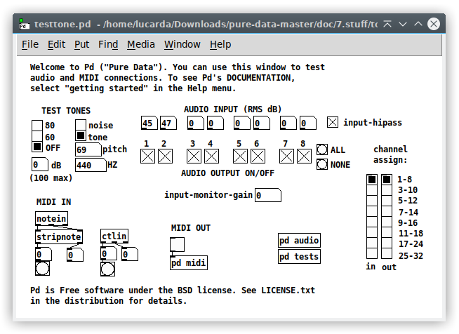
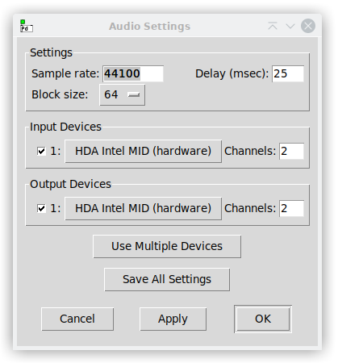
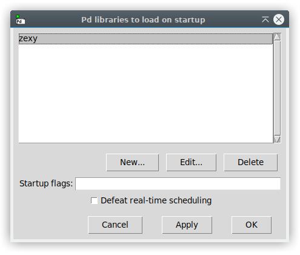
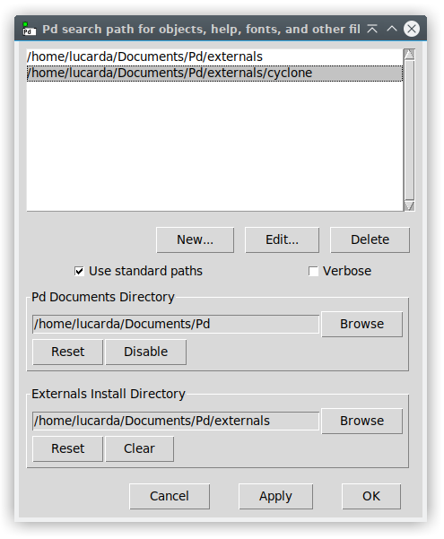

Pd Manual: Getting Pd to run
The following are basic instructions on how to get Pd installed and running on your machine. More details are maintained online on the pure-data.info site.
Pd runs under Microsoft Windows, Linux, and macOS. How to get Pd up and running depends on your operating system, but the overall strategy is the same. You must first get and install it, and then untangle whatever problems arise in handling audio and MIDI input and output, and finally get Pd to meet its real-time obligations reliably.
Installation instructions are platform-specific; the following three sections will describe what to do for various operating systems you might have. In case of trouble also consult the Pd mailing list archive on https://lists.puredata.info/listinfo/pd-list. , which often has late-breaking news about configuration problems and solutions. The rest of this section describes how to get audio and MIDI to work.
Audio and MIDI
To test audio and MIDI, start Pd and select “test Audio and MIDI” from the “Media” menu. You should see a window like this:

First, try to get Pd to play a sine wave over your speakers. The “TEST TONE” control at top left turns this on and off. Normally, all the output channels are turned on so that when you turn the tone on (to a soft -40 dB or a louder -20 dB) you should get output on the first eight of your output channels. (If you have fewer than 8 output channels open, the extra channels aren’t played; and if you have more, this particular patch won’t use them.)
If there’s anything wrong, the most likely outcome is that you will hear nothing at all. This could be for any of at least three reasons: Pd might have failed to open the audio device; the audio card’s output volume might be set to zero; or your audio system might not be set to amplify the computer output.
The number boxes labeled “AUDIO INPUT” show the levels of incoming audio, in dB, with 100 being maximum. (Incoming signals may clip at RMS levels below 100; for instance, a sinusoid clips at about 97 dB.) Any DC present in the input (such as you get with cheap audio hardware) will show up as level unless you turn on the “input hipass” toggle at right; then the DC component is filtered out before metering.
To test the quality of audio input and output, turn on “monitor” (also at right) which causes the inputs to be played to the outputs at unit gain. You should hear a faithful, non-distorted copy of whatever is sent through the patch.
It is easy to get two copies of Pd running by accident; on most machines only one at a time may be inputting and outputting sound. (Some copy of Pd might have audio or MIDI devices open and prevent the copy you’re trying to use from getting access to them.) Having extra copies of Pd around will also eat CPU cycles uselessly.
You may be interested in getting only audio output or audio input, or you may need both to run simultaneously. By default, Pd will try to run both, but if you don’t need either input or output, you may find that Pd runs more reliably, or at least more efficiently, with the unused direction turned off. This may be specified in Pd’s command line flags or using the “audio settings” dialog panel.
Depending on your application you will have a more or less stringent latency requirement. Ideally, when any input (audio, MIDI, keyboard, network) is available, the outputs (in particular the audio output) should react instantly. In real life, it is necessary to buffer the audio inputs and outputs, trying always to keep some number of milliseconds ahead of real time to prepare for the inevitable occasions where the CPU runs off to service some different task from Pd. How small this latency can be chosen depends on your OS and your audio driver.
TIP: If Pd starts up but you get distortion or glitches in the audio output, this could be either because the “audio I/O buffer” isn’t big enough, or else because the CPU load of the patch you’re running is too great for the machine you have, or else because the ADC and DAC are out of sync or even at different sample rates. To test for the first possibility, try increasing the audio latency in the command line or the “audio settings” dialog (but see also under your OS below.) For the second, start up your favorite performance monitor program; and for the third, try starting Pd up with ADCs disabled.
In addition to the “test audio and MIDI” patch, the “Media” menu contains items for controlling audio and MIDI settings. The first two items, “Audio on” and “Audio off”, open or close the audio devices and start or stop Pd’s audio computation.
If there is a choice of audio API to make, the Media menu will display them. (On Linux, they are OSS, ALSA, and Portaudio; on Windows, you get MMIO and ASIO). On Mac the only one is Portaudio. More information about the APIs appears in the sections below.
Selecting an API (even if it’s the one already in use), or, alternatively, selecting “Audio Settings…” from Preferences, opens a dialog panel like this:

The exact choices you get depend on the operating system and API. The sample rate controls both audio output and input. The audio throughput delay is the nominal amount of time, in milliseconds, that a sound coming into the audio input will be delayed if it is copied through Pd straight to the output. Naturally you would like this to be as small as possible, but, depending on OS, API, and even the specific choice of audio hardware, there will be a limit to how small you can make this. You can typically get 10 msec on Linux (and lower still if you use special tricks), 30 msec on MacOS, and 60 msec on Windows (but note that there might be ways that a patient Windows user can reduce this).
Next you get a choice of input and output device. If you want to open more than one, hit “use multiple devices” and you’ll be allowed up to 4 in and 4 out. Each audio device is 2 channels by default, but you may specify more if your hardware supports it. Other parameters may be tweaked using the command line; see under preferences and startup options.
MIDI
The “channel message” midi objects in Pd such as notein or pgmout will take channels 1-16 to mean the first open MIDI port, 17-32 the second one, and so on. The midiin, sysexin, midiout objects give you a separate inlet to specify which of the open MIDI port numbers you want.
System exclusive MIDI message input and output are theoretically supported but does not work uniformly across all operating systems..
Installing Pd in Microsoft Windows
Pd should work under any version of Windows since XP. You can download as a self-extracting archive (a “.exe” file). Run this and select a destination directory when prompted, such as “C:\pd” or “C:\Program Files\pd”.
If for example you put Pd in “C:\Program Files\pd”, the executable program will be “C:\Program Files\pd\bin\pd”. You can simply adjust your path to include “C:\Program Files\pd\bin" and then invoke “pd” in a command prompt window. You can also make a shortcut to the executable program (left-click on it and drag to the desktop, for example.)
Pd requires “TCP/IP networking” to be turned on. This doesn’t mean you have to be on a real network, but simply that Pd actually consists of two programs that make a “network link” (locally) to intercommunicate. The first time you run Pd the “Windows Firewall” will ask your permission to allow this intercommunication.
Audio in Microsoft Windows
Pd offers both the ASIO and MMIO APIs in Windows.
ASIO
As of version 0.35 Pd supports ASIO. Invoke Pd as “pd -asio” and, if needed, specify “-audiodev” (etc.) flags to specify which device (see “the Pd command line” below.) You can also specify a “-blocksize” different from the default (256 samples) and “-audiobuf” in milliseconds. Pd will round this down to a power of two buffers, each of “-blocksize” in sample frames.
TIP: You can use your built-in sound-card with the Universal ASIO Driver For WDM http://www.asio4all.org/
Installing Pd in Linux
What to do depends on which flavor of Linux you are running (e.g., Debian or Red Hat). The instructions here should work for Pd 0.33 and up regardless of your situation. (If not, you can read the Pd mailing list archives for recent problems; if you have found a new problem you’re welcome to post it to the list.)
Pd is available via the package systems for some Linux distributions, but not always in the most recent version possible. It’s relatively easy to compile your own copy of Pd and that is the approach described here.
Getting Pd as a .tar.gz
Before you start, you might want to check that you have the resources Pd needs. The main things you need are the C compiler, X windows (including the X development package for Pd to link against), TK, and the ALSA “devel” headers. It should be enough to load “tcl-devel”, “tk-devel”, and “alsa-devel” packages using yum or apt-get.
There are two parallel compilation setups now available. The old one is described here; as of 0.43 I still use that but I plan to discontinue this for 0.44 and start using only the new one. The following description applies to the old one. Look in the INSTALL.txt file to see how to use the new one.
Download Pd, perhaps from http://msp.ucsd.edu/software.html , to file such as “pd-linux-033.tar.gz”. Open a “shell” window, cd to the directory containing the file, and type the command,
tar xzf pd-linux-033.tar.gz
which creates a directory named “pd”. I do this from my home directory. Next, compile it. “cd” to pd and read the INSTALL.txt, or else just cd to “pd/src” and type
./autogen.sh
./configure
make
You can pass flags to “configure” to customize your compilation:
To enable debugging (and losing code optimization) add "--enable-debug".
To use Portaudio, add "--enable-portaudio".
To put Pd in /usr/bin instead of /usr/local/bin, add "--prefix=/bin".
Alsa and Jack support should auto-configure, but “–enable-alsa” od “–enable-jack” will force their inclusion.
After “make”, just type “~/pd/bin/pd” to run pd.
Alternatively, as superuser, you can run “make install” after “make depend” and then anyone on your system can just type “pd” to run it.
Testing audio and MIDI.
Next try audio. We want to know whether audio output works, whether audio input works, and whether they work simultaneously. First run “aumix” (or any newer audio mixer app) to check audio input and output gains and learn which input (mic; line; etc.) is “recording”. Then test audio output by running
pd -noadc
and selecting “test audio and MIDI” from the “Media” menu. You should see a patch. Turn on the test tone and listen. Do the usual where’s-the-signal business.
Then quit Pd and test audio input via
pd -nodac
Re-open the test patch and hit “meter”; look at the levels. 100 dB is a hard clip; arrange gains so that the input signal tops out around 80 or 90, but no higher.
Now see if your audio driver can do full duplex by typing “pd” with no flags. If you see error messages involving /dev/dsp or /dev/dsp2, you’re probably not able to run audio in and out at the same time. If on the other hand there’s no complaint, and if the audio test patch does what you want, you might wish to experiment with the “-audiobuffer” flag to see what values of audio latency your audio system can handle.
Audio hardware in Linux
Installing and testing audio and MIDI drivers in Linux can take days or weeks. There appears to be no single place where you can get detailed information on Linux audio.
There are two widely-used driver sets, called “OSS” and “ALSA”. ALSA is included in the standard Linux kernel since 2.4 or so. However, for some audio cards you can find newer versions than are included in the kernel releases. You can get ALSA from http://www.alsa-project.org/ .
ALSA is able to emulate OSS, so that you can usually run Pd using the “OSS” driver settings even if it’s actually ALSA that’s running.
By default, Pd uses ALSA. You can ask Pd to use ALSA’s OSS emulation by adding the “-oss” flag to the command line or fooling with the “media” menu items.
You can add ALSA devices by name on the Pd command line:
pd -alsaadd loupgarou
This instructs Pd to offer the ’loupgarou’ audio device in the Audio Settings panel.
Experiences with particular soudcards
Here are some of my own experiences with sound cards so far. See also the Pd mailing list archives.
RME 9652 (Hammerfall)
This is the best PCI sound card out there; it costs around $500 and has 3 ADAT I/O ports and one SPDIF. There is a “baby hammerfall” also, which I think is the “9632.” DO NOT CONFUSE THE 9652/9632 WITH OTHER RME BOARDS WHICH MIGHT NOT WORK WITH PD.
The easiest way to use Hammerfall boards in Pd is via ALSA and jack; but you can use ALSA alone:
pd -alsa -channels 26
works for me.
MIDIMAN
Midiman sells PCI devices (delta 44, 66, 1010, and 1010LT) with between 4 and 10 channels in and out, for which there are ALSA drivers. These are also very good, and they are a bit cheaper than Hammerfalls. The driver name is “ice1712”.
USB sound devices
Ed Kelly reports success with the Lexicon series of USB 1.0 devices (e.g., the Omega Studio; apparently 4 channels in and 4 out). Also known to work well is the Edirol box (2 channels in and out).
As of Sept. 2011, the only multi-channel USB device I’ve been able to use with Pd is the Native Instruments Traktor Audio series. (I have the Audio Traktor 10 which does indeed get 10 discrete channels in and out; the box is designed for turntables and the I/O is all RCA. I haven’t yet tested whether the inputs are RIAA equalized or flat. To run this device you’ll need to compile and install an ALSA snapshot from at least September 2011. This won’t start showing up in Linux distros for at least some months.
The Alsa developer list is reporting progress on the M-audio Ultra series, which goes up to 6 in and out (analog) with 2 more as SP/DIF. Things work OK for input or output separately but “full duplex” (in and out simultaneously) has sync problems.
Installing Pd in macOS
Pd version 0.35 and up support macOS. Recent versions of Pd require 10.6 or up.
To install Pd you can always download the sources and compile them yourself, or (easier) just download the Mac binary from the download page: http://msp.ucsd.edu/software.html or from the Pure Data community site: https://puredata.info This is in the form of a compressed tar.gz archive; just double click on it to extract the Pd application. Open this and you should be running.
You might get various warnings about Pd trying to open an internet port. This is normal although some system administrators will prevent you from doing this (in which case you can’t run Pd on that machine).
To install on macOS from source:
Whether you’ve downloaded the source or the “package” you can always compile Pd for yourself, whether to make your own improvements, or possibly so that you can get the newest version before it shows up compiled for macOS.
To be able to compile Pd, you must have Tcl/Tk installed in the standard places. I think this is true for all reasonably recent releases of macOS.
Overview: Just as for Linux, extract pd-#.#.#.tar.gz into a directory such as ~/pd-0.47-1, cd to ~/pd-0.47-1, run:
./autogen.sh
./configure
make
Then type ~/pd-0.47-1/bin/pd to a shell and enjoy!
Detailed build instructions can be found in the INSTALL.txt included with the Pd source distribution.
If you wish you can put a line such as,
alias pd ~/pd/bin/pd
in the file, ~/.tcshrc, so that you can later just type “pd” to a shell. (The shell only reads the ~/.tcshrc file on startup, so this won’t take effect in any existing shells unless you specially type
source ~/.tcshrc
to them.)
Follow the general directions above for testing audio and/or MIDI as needed.
To get MIDI working, you have to do the macOS magic to get a USB MIDI interface installed. I’ve seen this done with Midisport devices and I think you just download the macOS driver and follow directions.
Preferences and startup options
Pd’s behavior may be customized to instruct it where to find files, which audio devices to open, what font size to use, and so on. Most of these may also be changed using the various dialogs you can open from Pd’s menus. Others take effect only when Pd starts up; some of these appear on the “startup” dialog and some of them, too cranky to put in a GUI, must be typed as command line arguments .
In addition to the Audio and MIDI settings (see Audio and MIDI ), you can customize font size (from the “edit” menu), directories to search for files (see How Pd searches for files ), and additional startup parameters described below.
All of these settings may be saved automatically between Pd sessions. It is also possible to specify settings directly via the command line . (A third mechanism, using configuration files, is deprecated and isn’t described here.) The Pd command line is described in the next section. Command line settings, if given, each override the corresponding setting that was saved from Pd.
The startup settings (i.e., those that take effect only when Pd is started) are controlled using the “startup…” dialog from the File menu. The dialog appears as follows:

The slots at top each specify a binary “library” for Pd to load on startup. These may be for Gem, pdp, zexy, iemlib, cyclone, and so on. Typically, a single binary object (an “extern”) is left for Pd to load automatically; startup library loading is appropriate for collections of many objects specified by a single binary library. ( See Externals for more on externals and how to load them)
The “defeat real-time scheduling” control, if enabled, makes Pd run without its usual effort to become a real-time process (whatever this means in the operating system you are using.) In Unix, Pd must usually be setuid to allow real-time scheduling at all.
The “startup flags” allow you to add to Pd’s command line on startup. This is specified as described below, except that the initial word, “pd”, is understood. For example, putting “-rt” in this field sets real-time scheduling; “-sleepgrain 1” sets the sleep grain to 1 (see under MIDI below), and typing “-rt -sleepgrain 1” does both.
You may save the current settings for future Pd sessions with the “save all settings” button; this saves not only the path but all other settings as well.
Command line arguments
Pd may be run as a “command line” program from your “terminal emulator,” “shell,” or “MS-DOS prompt.” In Windows, if Pd is started using a “shortcut” it is also run from a command line which you can edit using the “properties” dialog for the shortcut. In any operating system, Pd can be called from a script (called a batch file on Windows or a shell script on macOS or Unix). The command line is just a line of text, which should be of the form:
pd [options] [patches to open]
although you may have to specify a path (such as “~/pd/bin/pd” or “C:\program files\pd\bin\pd”) so your command interpreter can find Pd. Possible options include:
audio configuration flags:
-r <n> -- specify sample rate
-audioindev ... -- sound in device list; e.g., "2,1" for second and first
-audiooutdev ... -- sound out device list, same as above
-audiodev ... -- specify both -audioindev and -audiooutdev together
-audioaddindev -- add an audio input device by name
-audioaddoutdev -- add an audio output device by name
-audioadddev -- add an audio input and output device by name
-inchannels ... -- number of audio in channels (by device, like "2" or "16,8")
-outchannels ... -- number of audio out channels (by device)
-channels ... -- specify both input and output channels
-audiobuf <n> -- specify size of audio I/O buffer in msec
-blocksize <n> -- specify audio I/O block size in sample frames
-sleepgrain <n> -- specify number of milliseconds to sleep when idle
-nodac -- suppress audio output
-noadc -- suppress audio input
-noaudio -- suppress audio input and output (-nosound is synonym)
-callback -- use callbacks if possible
-nocallback -- use polling-mode (true by default)
-listdev -- list audio and MIDI devices
(Linux specific audio:)
-oss -- use ALSA audio drivers
-alsa -- use ALSA audio drivers
-pa -- use portaudio (experimental version 19)
-alsadev <n> -- obsolete: use -audiodev
-32bit -- (probably obsolete) -- use 32 bit OSS extension
-alsaadd <name> -- add a device to the ALSA device list
(Windows specific audio:)
-mmio -- use MMIO drivers and API
-asio -- use ASIO drivers and API
-pa -- synonym for -asio
(Using the JACK API:)
-jack -- use JACK audio API
-jackname <name> -- a name for your JACK client
-nojackconnect -- do not automatically connect pd to the JACK graph
-jackconnect -- automatically connect pd to the JACK graph [default]
MIDI configuration flags:
-midiindev ... -- midi in device list; e.g., "1,3" for first and third
-midioutdev ... -- midi out device list, same format
-mididev ... -- specify -midioutdev and -midiindev together
-midiaddindev -- add a MIDI input device by name
-midiaddoutdev -- add a MIDI output device by name
-midiadddev -- add a MIDI input and output device by name
-nomidiin -- suppress MIDI input
-nomidiout -- suppress MIDI output
-nomidi -- suppress MIDI input and output
-ossmidi -- use OSS midi API (Linux only)
-alsamidi -- use ALSA midi API (Linux only)
general flags:
-path <path> -- add to file search path
-nostdpath -- don't search standard ("extra") directory
-stdpath -- search standard directory (true by default)
-helppath <path> -- add to help file search path
-open <file> -- open file(s) on startup
-lib <file> -- load object library(s) (omit file extensions)
-font-size <n> -- specify default font size in points
-font-face <name> -- specify default font
-font-weight <name> -- specify default font weight (normal or bold)
-verbose -- extra printout on startup and when searching for files
-noverbose -- no extra printout
-version -- don't run Pd; just print out which version it is
-d <n> -- specify debug level
-loadbang -- do not suppress all loadbangs (true by default)
-noloadbang -- suppress all loadbangs
-stderr -- send printout to standard error instead of GUI
-nostderr -- send printout to GUI (true by default)
-gui -- start GUI (true by default)
-nogui -- suppress starting the GUI
-guiport <n> -- connect to pre-existing GUI over port <n>
-guicmd "cmd..." -- start alternative GUI program (e.g., remote via ssh)
-send "msg..." -- send a message at startup, after patches are loaded
-prefs -- load preferences on startup (true by default)
-noprefs -- suppress loading preferences on startup
-prefsfile <file> -- load preferences from a file
-rt or -realtime -- use real-time priority
-nrt -- don't use real-time priority
-sleep -- sleep when idle, don't spin (true by default)
-nosleep -- spin, don't sleep (may lower latency on multi-CPUs)
-schedlib <file> -- plug in external scheduler (omit file extensions)
-extraflags <s> -- string argument to send schedlib
-batch -- run off-line as a batch process
-nobatch -- run interactively (true by default)
-autopatch -- enable auto-patching to new objects (true by default)
-noautopatch -- defeat auto-patching
-compatibility <f> -- set back-compatibility to version <f>
Here are some details on some of the audio, MIDI, and scheduler options (but see also the next section on file management.)
multiple devices.
You can specify multiple MIDI input and output devices. For example, “pd -midiindev 3 -midioutdev 4,2” asks for the third MIDI input device and the fourth and second MIDI output device.
Audio device selection is similar, except that you can also specify channels by device: “-audioindev 1,3 -inchannels 2,8” will try to open device 1 (2 channels) and device 3 (8 channels.)
sample rate.
The sample rate controls Pd’s logical sample rate which need not be that of the audio input and output devices. If Pd’s sample rate is wrong, time will flow at the wrong rate and synthetic sounds will be transposed. If the output and input devices are running at different rates, Pd will constantly drop frames to re-sync them, which will sound bad. You can disable input or output if this is a problem.
audio buffer size and block size
You can specify an audio buffer size in milliseconds, typically between 10 and 300, depending on how responsive your OS and drivers are. If this is set too low there will be audio I/O errors (“data late”). The higher the value is, on the other hand, the more throughput delay you will hear from the audio and/or control inputs (MIDI, GUI) and the audio coming out.
You can also specify the audio block size in sample frames. This is 64 by default (except for MMIO for which it’s 256), and may be 64, 128, or 256.
MIDI and sleepgrain
In Linux, if you ask for “pd -midioutdev 1” for instance, you get /dev/midi0 or /dev/midi00 (or even /dev/midi). “-midioutdev 45” would be /dev/midi44. In Windows, device number 0 is the “MIDI mapper”, which is the default MIDI device you selected from the control panel; counting from one, the device numbers are card numbers as listed by “pd -listdev.”
The “sleepgrain” controls how long (in milliseconds) Pd sleeps between periods of computation. This is normally the audio buffer divided by 4, but no less than 0.1 and no more than 5. On most OSes, ingoing and outgoing MIDI is quantized to this value, so if you care about MIDI timing, reduce this to 1 or less.
How Pd searches for files
Pd has a search path feature; you specify the path on the command line using the “-path” option. Paths may contain any number of files. If you specify several files in a single “-path” option they’re separated by colons in Unix or semicolons in Windows.
You can see and edit the path while Pd is running using the “path…” item in the “File / Preferences” menu:

The path must be correctly set before you load a patch or it may fail to find abstractions, etc., that are needed to construct the patch. When Pd searches for an abstraction or an “extern” it uses the path to try to find the necessary file. The “read” messages to qlists and arrays (aka tables) do this too.
If “use standard extensions” is enabled, the usual “extra” directory is also searched. This contains standard external objects like “sigmund~” (as well as it’s predecessor “fiddle~”) and “bonk~”, and perhaps much more depending on the distribution of Pd you’re using.
You may save the current settings for future Pd sessions with the “save all settings” button; this saves not only the path but all other settings as well.
Path entries may be relative to the patch directory; for instance, if your path has an item, “../sound”, and your patch is in “my stuff/all mine”, then Pd will look in “my stuff/sound”. Spaces should be OK in the path to the patch, but not in the path entry (../sound) itself. This is useful if you have a patch and supporting files (even a supporting snapshot of pd) that you want to distribute or carry around together.
Regardless of path, Pd should look first in the directory containing the patch before searching down the path. Pd does not automatically look in the current directory however; to enable that, include “.” in the path. The “extra” directory, if enabled, is searched last.
Filenames in Pd are always separated by (Unix-style) forward slashes, even if you’re on Windows (which uses backslashes). This is so that patches can be ported more easily between operating systems. On the other hand, if you specify a filename on the command line (as in “pd -path c:\pdlib”) the file separator should agree with the operating system.
A filename specified in a patch with any “/” characters in it (such as “../sounds/sample1.wav”) causes Pd to to look both in the path and relative to the directory containing the patch. You may also invoke externs that way. ( See Externals for more on externals and how to load them)
As of version 0.35, there may be spaces in the path to Pd itself; also, the “openpanel” and “savepanel” objects can handle spaces. Spaces in the path should work as of version 0.38.